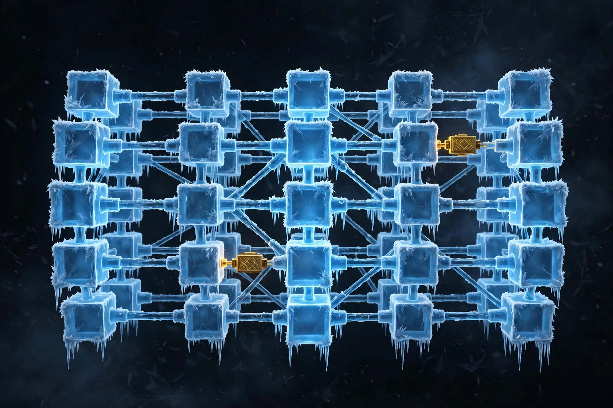

Hôm qua bạn đã học SFT: dạy model biết làm theo hướng dẫn. Hôm nay ta học cách dạy rẻ hơn rất nhiều: đóng băng gần như toàn bộ model, chỉ train hai ma trận nhỏ. Nhưng nhớ kỹ tiêu đề bài này — LoRA không phải phép màu, nó là một giả thuyết. Và tối nay, bạn sẽ kiểm chứng nó bằng số liệu thật.

Lấy một ma trận trọng số W có kích thước d × k. Full fine-tune cập nhật mọi phần tử của W, tức là ma trận thay đổi ΔW cũng to bằng W. Với model 7 tỉ tham số, dùng AdamW, hóa đơn bộ nhớ trông như sau:
| Thành phần | Độ chính xác | Ước tính cho 7B |
|---|---|---|
| Trọng số model | fp16 (2 byte) | ~14 GB |
| Gradient | fp16 (2 byte) | ~14 GB |
| Trạng thái Adam (m và v) | fp32 (4 + 4 byte) | ~56 GB |
| Bản master fp32 (nếu có) | fp32 | ~28 GB |
| Tổng cộng | ~112 GB |
Chưa kể: mỗi nhiệm vụ mới lại cần lưu thêm một bản copy toàn bộ model, vài chục GB. Muốn chạy 5 nhiệm vụ trên cùng một model gốc? 5 bản copy. Đó là lý do người ta đi tìm cách train ít hơn mà vẫn học được.
Giả thuyết của LoRA (Hu và cộng sự, 2021): khi fine-tune, ma trận thay đổi ΔW mà model thực sự cần có rank thấp — tức là nó có thể được viết gần đúng dưới dạng tích của hai ma trận mỏng. Thay vì học trực tiếp ΔW kích thước d × k, ta học:
Trong đó W0 bị đóng băng (không train), A có kích thước r × k, B có kích thước d × r, và r — gọi là rank — rất nhỏ so với d và k (thường 4, 8, 16, 64).
Khi chạy forward, đầu vào x đi qua cả hai nhánh rồi cộng lại: h = W0x + B·A·x. Nhánh W0 giữ kiến thức cũ, nhánh B·A học cái mới.
Với d = k = 4096 (một ma trận attention của model cỡ vừa):
| Rank r | Tham số train được (A + B) | Tỉ lệ so với full (16,8 triệu) |
|---|---|---|
| r = 4 | 32.768 | 0,20% |
| r = 8 | 65.536 | 0,39% |
| r = 16 | 131.072 | 0,78% |
| r = 64 | 524.288 | 3,13% |
Công thức tính: r × k + d × r = r × (d + k). Chỉ train dưới 1% tham số mà vẫn học được — nếu giả thuyết low-rank đúng với nhiệm vụ của bạn. Chữ "nếu" này rất quan trọng, xem mục 6.
Vì ΔW = B·A. Nếu B = 0 thì ΔW = 0 ngay từ đầu, bất kể A là gì. Nghĩa là lúc mới bắt đầu train, model LoRA hoạt động y hệt model gốc — không bị hỏng kiến thức cũ ngay bước đầu tiên. Sau đó gradient cập nhật cả A và B, ΔW dần dần khác 0. Nếu khởi tạo cả hai ngẫu nhiên, model sẽ thay đổi lung tung ngay từ đầu, mất điểm xuất phát tốt của pretrained model.
Khi tăng r, tích B·A có xu hướng lớn lên (cộng nhiều thành phần hơn). Chia cho r để giữ độ lớn của ΔW ổn định khi đổi rank. α là một núm vặn thêm: α = 16, r = 8 thì tỉ lệ là 2, tức là ΔW được nhân đôi. Quy tắc thực hành thường gặp: đặt α = 2r hoặc α = r, rồi giữ cố định trong cả ablation — nếu vừa đổi r vừa đổi α thì không biết cải thiện đến từ đâu.
LoRA dropout (thường 0,05–0,1) áp lên đầu vào của nhánh LoRA trong lúc train, giúp tránh overfit khi dữ liệu nhỏ — đúng hoàn cảnh của fine-tune. Dữ liệu càng ít, dropout càng đáng cân nhắc; nhưng dropout quá cao sẽ làm nhánh LoRA học chậm và nhiễu.
Trong một Transformer block, các ứng viên là các ma trận tuyến tính: q_proj, k_proj, v_proj, o_proj của attention, và gate_proj, up_proj, down_proj của MLP. Kinh nghiệm thực hành:
Nhớ rằng MLP chiếm phần lớn tham số của block, nên gắn thêm MLP là quyết định tốn kém nhất trong các lựa chọn target modules — cân nhắc bằng ablation, không gắn theo cảm tính.
| Cách dùng | Ưu điểm | Nhược điểm |
|---|---|---|
| Merge: W′ = W0 + (α/r)·B·A, lưu thành model mới | Chạy inference không tốn thêm gì, không chậm thêm, dùng được với mọi engine suy luận | Mất khả năng đổi adapter nhanh; muốn quay lại phải giữ bản W0 gốc |
| Giữ rời: lưu W0 + adapter nhỏ (vài MB đến vài chục MB) | Một model gốc phục vụ nhiều nhiệm vụ, chỉ cần đổi adapter; lưu trữ rẻ | Inference phải tính thêm nhánh B·A; cần engine hỗ trợ adapter |
Thực hành tốt: luôn giữ bản W0 gốc và file adapter riêng, merge chỉ là bước tạo bản triển khai cuối cùng. Merge xong phải test lại: load model đã merge, chạy cùng vài prompt, đối chiếu output với bản chưa merge — nếu khác nhau thì quy trình merge có lỗi, không phải model học sai.
LoRA giả định "thay đổi cần thiết nằm trong không gian rank thấp". Giả định này lung lay khi:
Cách kiểm chứng duy nhất là ablation: giữ mọi thứ cố định, chỉ đổi rank, rồi so chất lượng. Nếu r = 16 tốt hơn r = 4 rõ rệt, giả thuyết low-rank ở mức r = 4 đã sai với nhiệm vụ này. Nếu r = 16 và r = 64 gần như nhau, rank cao hơn chỉ tốn thêm tham số mà không thêm chất lượng — đó là lúc dừng lại.
LoRA tiết kiệm ở ba chỗ, không chỉ một: (1) optimizer state chỉ tính trên <1% tham số nên VRAM giảm mạnh, có thể train trên GPU nhỏ hơn; (2) checkpoint mỗi nhiệm vụ chỉ vài MB đến vài chục MB thay vì hàng chục GB, tiết kiệm lưu trữ và truyền tải; (3) thử nghiệm rẻ nên bạn dám chạy ablation r = 4/8/16 thay vì đoán mò — và ablation rẻ chính là cách tránh lãng phí lớn nhất.
Nhưng đừng tự suy diễn "LoRA luôn xanh hơn". Tối nay hãy đo: chất lượng trên mỗi kWh và MB lưu trữ so với full fine-tune (nếu model đủ nhỏ để chạy full). Một adapter train lâu gấp đôi vì rank quá thấp có thể tốn điện hơn một lần full fine-tune nhanh — đo end-to-end mới kết luận được, giống bài học ngày 18 về QLoRA sẽ nhắc lại.
Tối nay bạn fine-tune LoRA với r = 4, 8, 16 và lập bảng ablation. Để bảng này có ý nghĩa, chỉ duy nhất rank được phép thay đổi. Mọi thứ còn lại giữ cố định: